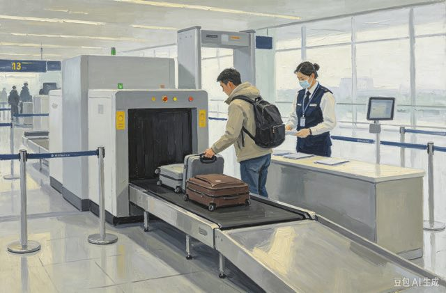
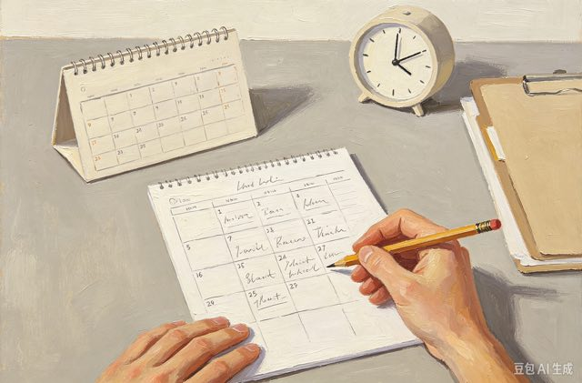
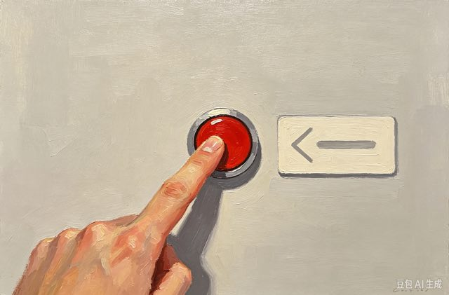
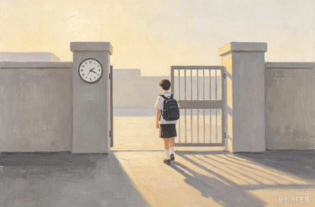
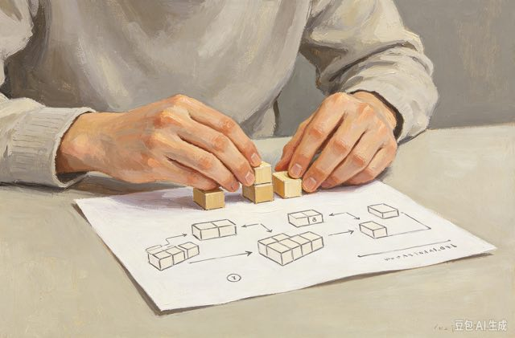

啊，真好、啊，太棒了、啊，原来是这样
1.啊，这里的风景真美！
2.啊，我忘记带钥匙了。
“啊”只用在句子开头，用来表达惊讶、感叹。不要放在句子中间。读音会跟着前面的字变化，不只有ā这一个读法。
①啊，今天天气很好！（）
②我啊喜欢吃水果。（）
参考答案：①（√） ②（×）
美好的爱情、相信爱情、爱情故事
1.他们拥有美好的爱情。
2.这本书讲的是一个爱情故事。
是名词，只能当主语、宾语。不能直接拿来当动词用，不能说“爱情某人”。
①我相信美好的爱情。（）
②我爱情这个女孩子。（）
参考答案：①（√） ②（×）
爱恋
有爱心、献出爱心、爱心活动
1.这个老师很有爱心。
2.我们为穷人献出爱心。
爱心是说人善良、愿意帮助别人；爱情是男女之间的感情，两个词不要搞混。它也是名词，不能直接当动词。
①她是一个很有爱心的姑娘。（）
②我爱心小狗，我想收养它。（）
参考答案：①（√） ②（×）
善心

过安检、进行安检、安检机器
1.坐飞机之前我们要过安检。
2.工作人员正在安检旅客的行李。
多用于机场、火车站。我们人“过安检”；工作人员“安检行李”。不要把人当作安检对象。
①坐高铁之前我们需要过安检。（）
②警察安检我，让我打开包。（）
参考答案：①（√） ②（×）

安排时间、安排工作、安排房间
1.老师帮我们安排考试时间。
2.酒店已经安排好了我们的房间。
表示把时间、事情、人员整理妥当。可以说“把XX安排好”。注意不要漏掉“把”字句。
①老板安排我去外地工作。（）
②我安排好了明天的时间。（）
参考答案：①（√） ②（√）
筹划

按按钮、按要求、按规定
1.请按这个红色的按钮。（动词）
2.按规定，我们不能迟到。（介词）
做动词：用手往下压；做介词：照着标准去做。介词“按”不能单独放在句子开头就结束，后面必须带上名词。
①请按一下这个门铃。（）
②按，我要这么做。（）
参考答案：①（√） ②（×）

按时上课、按时吃饭、按时睡觉
1.请大家按时来上课。
2.我每天按时完成作业。
副词，直接放在动词前面。后面不能加“的”。意思是遵守时间，不迟到。
①我们按时到达火车站。（）
②按时的完成作业。（）
参考答案：①（√） ②（×）
准时

按照计划、按照规则、按照例子
1.我们按照计划出发。
2.请按照这个样子写汉字。
照着某个标准做，后面一定要接名词。别跟“按时”搞混，按时跟时间有关；按照跟规则、计划有关。
①按照老师的要求完成练习。（）
②按照写，你就可以做好。（）
参考答案：①（√） ②（×）
依照
一杯白酒、喝白酒、中国白酒
1.爸爸过年喜欢喝白酒。
2.这是一杯中国白酒。
名词，是中国度数很高的酒。要分清白酒、啤酒、红酒。名词一般放在动词后面，不要颠倒语序。
①爷爷过节的时候会喝白酒。（）
②我白酒很喜欢。（）
参考答案：①（√） ②（×）
办公时间、办公地点、办公设备
1.他在办公室办公。
2.现在是办公时间，请安静。
专指上班处理工作，是工作人员做的事。学生写作业不能用办公。学生容易错说成“做办公”。
①经理正在办公室办公。（）
②每天晚上我在家做办公。（）
参考答案：①（√） ②（×）
工作